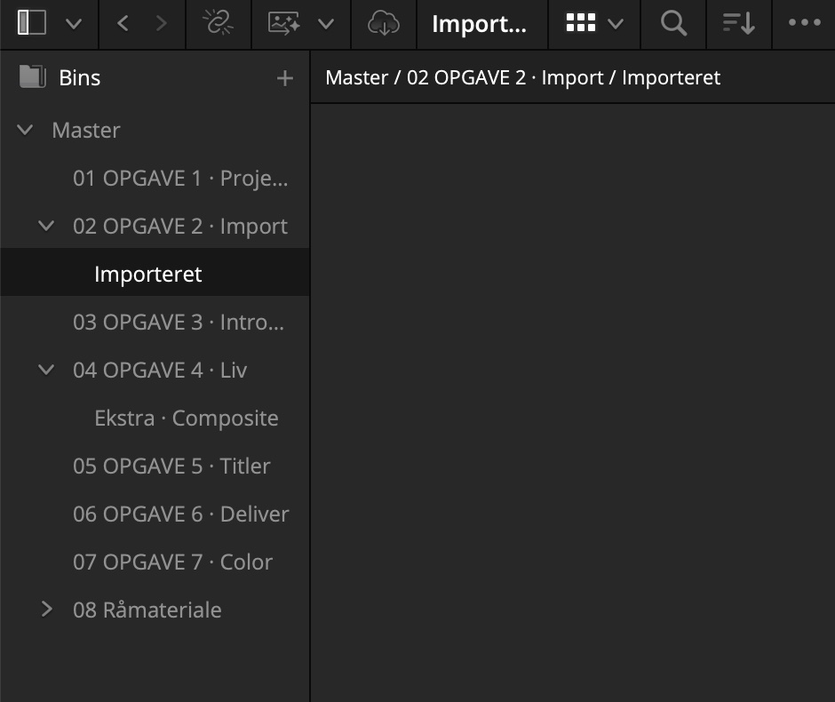
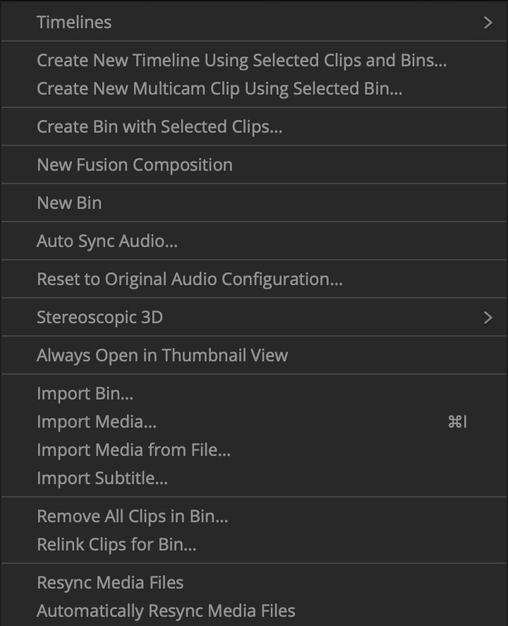
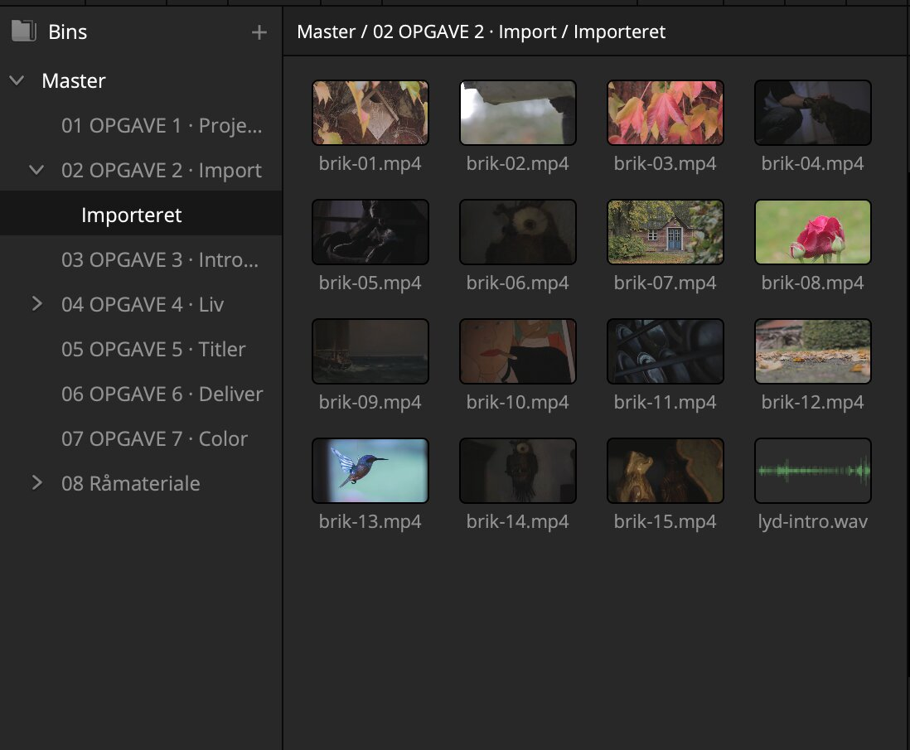
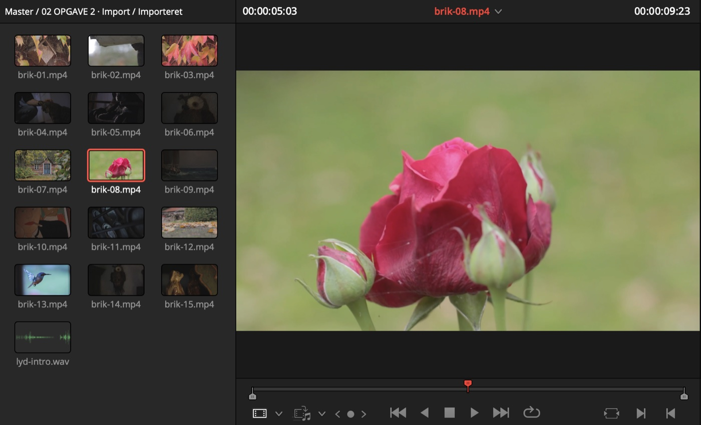
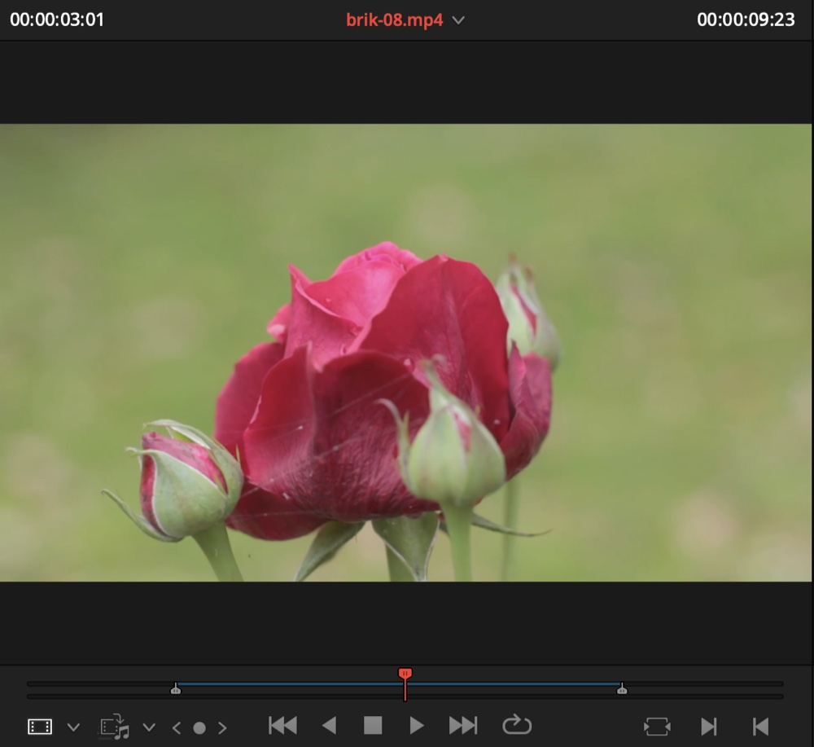
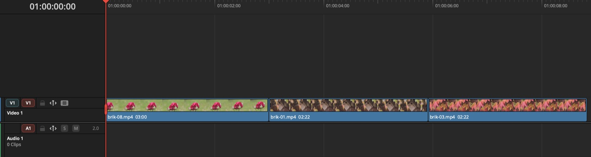

Første del · Vis 4 → Gør 5
Klippene ind i projektet
Vis · 4 min
Kig med. Hænderne væk fra musen.
Panelet til venstre hedder Media Pool. Mapperne i det hedder bins i Resolve, men det er mapper. Hver opgave har sin egen, med samme nummer som på siden her.
-
Åbn mappen Importeret
Den ligger i 02 OPGAVE 2, og den er tom med vilje.

-
Træk klippene ind
Åbn mappen Importer selv på din computer, marker alle filerne, og træk dem ind i det tomme felt i Media Pool.
Vil du hellere bruge en menu: højreklik i det tomme felt, og vælg Import Media, eller tryk Ctrl + I (Windows) / Cmd + I (Mac).

Import Media sidder midt i menuen. Genvejen står ud for den.
Gør · 5 min Åbn, når jeg siger nu Nu er det dig
Start i 02 OPGAVE 2 · Importeret
Importér klippene og lyden fra mappen Importer selv.
Sådan
- Klik på mappen Importeret i 02 OPGAVE 2. Se trinet
- Træk alle filer fra Importer selv ind i det tomme felt, eller brug Ctrl + I (Windows) / Cmd + I (Mac). Se trinet
Jeg kan ikke se Media Pool
Panelet kan slås fra. Kig efter knappen Media Pool øverst til venstre, og klik på den.
Checkpoint
Der ligger 15 klip og en lydfil i Importeret.

Anden del · Vis 5 → Gør 10
Lær klippene at kende
Vis · 5 min
Kig med. Hænderne væk fra musen.
Før man kan klippe, skal man vide, hvad man har. Det er det trin, folk springer over, og så bruger de en time på at lede efter et klip, de kun halvt kan huske.
-
Forhåndsvis et klip
Før musen hen over et klip i Media Pool uden at klikke. Klippet spiller med, mens musen bevæger sig. Det hedder at scrubbe, og det er den hurtigste måde at få et indtryk af et klip på.
-
Åbn det i source viewer
Dobbeltklik på klippet. Det lægger sig i source viewer, vinduet til venstre. Vinduet til højre viser filmen, som den bliver. Venstre er råvarerne, højre er retten.

-
Brug J, K og L i stedet for musen
L spiller fremad. K stopper. J spiller baglæns. Flere tryk på L eller J giver højere fart. Hånden bliver på tastaturet, og det er den vane, der adskiller en, der klipper hurtigt, fra en, der ikke gør.
-
Marker det bedste stykke
Find stedet, hvor klippet skal starte, og tryk I. Spil videre til det skal slutte, og tryk O. Det markerede stykke er det, der lander på timelinen, ikke resten af klippet.

Det markerede felt i bunden er stykket mellem I og O.
Gør · 10 min Åbn, når jeg siger nu Nu er det dig
Start i 02 OPGAVE 2 · Importeret
Kig alle klippene igennem med J, K og L. Sæt In og Out på det bedste stykke i hvert klip, du når.
Sådan
- Dobbeltklik på et klip for at åbne det i source viewer. Se trinet
- L frem, K stop, J tilbage. Se trinet
- I ved starten af det bedste stykke, O ved slutningen. Se trinet
J, K og L reagerer ikke
Klik først på selve billedet i source viewer, så tastaturet ved, hvilket vindue det skal styre. Markøren kan stå i et andet panel, uden at du kan se det.
Tredje del · Vis 4 → Gør 8
De første klip ned på timelinen
Vis · 4 min
Kig med. Hænderne væk fra musen.
-
Åbn timelinen Opg 2 ØVE
Den ligger i 02 OPGAVE 2. Dobbeltklik for at åbne den. Den er tom og kun til at øve på, så det gør ikke noget, hvis du roder.
-
Træk klippet ned
Klik midt i source viewer, og træk ned på timelinen. Det markerede stykke lander der, hvor du slipper det.

Et fif: Q skifter mellem source viewer og timeline viewer. Det er hurtigere end at klikke.
Gør · 8 min Åbn, når jeg siger nu Nu er det dig
Start i Opg 2 ØVE
Læg tre klip ned efter hinanden på Opg 2 ØVE.
Sådan
- Dobbeltklik på timelinen Opg 2 ØVE i 02 OPGAVE 2. Se trinet
- Sæt In og Out i source viewer, og træk billedet ned på timelinen. Q skifter mellem viewerne. Se trinet
Hurtigt færdig?
Lav en ny mappe: højreklik i det tomme felt under mapperne, og vælg New Bin. Giv den et navn, og sortér klippene i den, fx efter motiv.
Checkpoint
Tre klip ligger efter hinanden på Opg 2 ØVE.